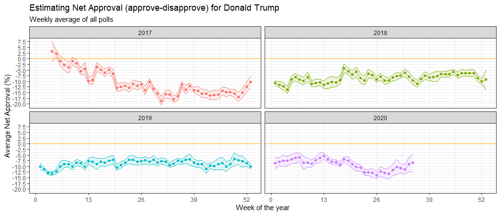

Climate change and temperature anomalies
If we wanted to study climate change, we can find data on the Combined Land-Surface Air and Sea-Surface Water Temperature Anomalies in the Northern Hemisphere at NASA’s Goddard Institute for Space Studies. The tabular data of temperature anomalies can be found here
To define temperature anomalies you need to have a reference, or base, period which NASA clearly states that it is the period between 1951-1980.
Run the code below to load the file:
weather <-
read_csv("https://data.giss.nasa.gov/gistemp/tabledata_v3/NH.Ts+dSST.csv",
skip = 1,
na = "***")
Notice that, when using this function, we added two options: skip and na.
- The
skip=1 option is there as the real data table only starts in Row 2, so we need to skip one row.
na = "***" option informs R how missing observations in the spreadsheet are coded. When looking at the spreadsheet, you can see that missing data is coded as "***". It is best to specify this here, as otherwise some of the data is not recognized as numeric data.
Once the data is loaded, notice that there is an object titled weather in the Environment panel. If you cannot see the panel (usually on the top-right), go to Tools > Global Options > Pane Layout and tick the checkbox next to Environment. Click on the weather object, and the dataframe will pop up on a seperate tab. Inspect the dataframe.
For each month and year, the dataframe shows the deviation of temperature from the normal (expected). Further the dataframe is in wide format.
You have two objectives in this section:
Select the year and the twelve month variables from the weather dataset. We do not need the others (J-D, D-N, DJF, etc.) for this assignment. Hint: use select() function.
Convert the dataframe from wide to ‘long’ format. Hint: use gather() or pivot_longer() function. Name the new dataframe as tidyweather, name the variable containing the name of the month as month, and the temperature deviation values as delta.
weather <- weather %>%
select(Year, Jan, Feb, Mar, Apr, May, Jun, Jul, Aug, Sep, Oct, Nov, Dec)
tidyweather <- pivot_longer(weather, cols = 2:13,
names_to = "month",
values_to = "delta"
)
Inspect your dataframe. It should have three variables now, one each for
- year,
- month, and
- delta, or temperature deviation.
Plotting Information
Let us plot the data using a time-series scatter plot, and add a trendline. To do that, we first need to create a new variable called date in order to ensure that the delta values are plot chronologically.
In the following chunk of code, I used the eval=FALSE argument, which does not run a chunk of code; I did so that you can knit the document before tidying the data and creating a new dataframe tidyweather. When you actually want to run this code and knit your document, you must delete eval=FALSE, not just here but in all chunks were eval=FALSE appears.
tidyweather <- tidyweather %>%
mutate(date = ymd(paste(as.character(Year), month, "1")),
month = month(date),
year = year(date))
ggplot(tidyweather, aes(x=date, y = delta))+
geom_point()+
geom_smooth(color="red") +
theme_bw() +
labs (
title = "Weather Anomalies",
x= "Date",
y= "Temperature Diviation"
)

Is the effect of increasing temperature more pronounced in some months? Use facet_wrap() to produce a seperate scatter plot for each month, again with a smoothing line. Your chart should have human-readable labels; that is, each month should be labeled “Jan”, “Feb”, “Mar” (full or abbreviated month names are fine), not 1, 2, 3.

It is sometimes useful to group data into different time periods to study historical data. For example, we often refer to decades such as 1970s, 1980s, 1990s etc. to refer to a period of time. NASA calculates a temperature anomaly, as difference from the base period of 1951-1980. The code below creates a new data frame called comparison that groups data in five time periods: 1881-1920, 1921-1950, 1951-1980, 1981-2010 and 2011-present.
We remove data before 1800 and before using filter. Then, we use the mutate function to create a new variable interval which contains information on which period each observation belongs to. We can assign the different periods using case_when().
comparison <- tidyweather %>%
filter(Year>= 1881) %>% #remove years prior to 1881
#create new variable 'interval', and assign values based on criteria below:
mutate(interval = case_when(
Year %in% c(1881:1920) ~ "1881-1920",
Year %in% c(1921:1950) ~ "1921-1950",
Year %in% c(1951:1980) ~ "1951-1980",
Year %in% c(1981:2010) ~ "1981-2010",
TRUE ~ "2011-present"
))
Inspect the comparison dataframe by clicking on it in the Environment pane.
Now that we have the interval variable, we can create a density plot to study the distribution of monthly deviations (delta), grouped by the different time periods we are interested in. Set fill to interval to group and colour the data by different time periods.
#intervals
ggplot(comparison, aes(x=delta, fill=interval))+
geom_density(alpha=0.2) + #density plot with tranparency set to 20%
theme_bw() + #theme
labs (
title = "Density Plot for Yearly Temperature Anomalies",
y = "Density" #changing y-axis label to sentence case
)

#month
ggplot(comparison, aes(x=delta, fill=month))+
geom_density(alpha=0.2) + #density plot with tranparency set to 20%
theme_bw() + #theme
labs (
title = "Density Plot for Monthly Temperature Anomalies",
y = "Density" #changing y-axis label to sentence case
)

So far, we have been working with monthly anomalies. However, we might be interested in average annual anomalies. We can do this by using group_by() and summarise(), followed by a scatter plot to display the result.
#creating yearly averages
average_annual_anomaly <- tidyweather %>%
group_by(Year) %>% #grouping data by Year
# creating summaries for mean delta
# use `na.rm=TRUE` to eliminate NA (not available) values
summarise(annual_average_delta = mean(delta, na.rm=TRUE))
#plotting the data:
ggplot(average_annual_anomaly, aes(x=Year, y= annual_average_delta))+
geom_point()+
#Fit the best fit line, using LOESS method
geom_smooth() +
#change to theme_bw() to have white background + black frame around plot
theme_bw() +
labs (
title = "Average Yearly Anomaly",
y = "Average Annual Delta"
)

Confidence Interval for delta
NASA points out on their website that
A one-degree global change is significant because it takes a vast amount of heat to warm all the oceans, atmosphere, and land by that much. In the past, a one- to two-degree drop was all it took to plunge the Earth into the Little Ice Age.
Your task is to construct a confidence interval for the average annual delta since 2011, both using a formula and using a bootstrap simulation with the infer package. Recall that the dataframe comparison has already grouped temperature anomalies according to time intervals; we are only interested in what is happening between 2011-present.
formula_ci <- comparison %>%
filter(interval=="2011-present", !is.na(delta)) %>%
group_by(Year) %>%
summarise(min_delta=min(delta),
mean_delta=mean(delta),
median_delta=median(delta),
max_delta=max(delta),
sd_delta=sd(delta),
count=n(),
# get t-critical value with (n-1) degrees of freedom
t_critical = qt(0.975, count-1),
se_delta = sd(delta)/sqrt(count),
margin_of_error = t_critical * se_delta,
delta_low = mean_delta - margin_of_error,
delta_high = mean_delta + margin_of_error
)
# choose the interval 2011-present
# what dplyr verb will you use?
# calculate summary statistics for temperature deviation (delta)
# calculate mean, SD, count, SE, lower/upper 95% CI
# what dplyr verb will you use?
#print out formula_CI
formula_ci
## # A tibble: 9 x 12
## Year min_delta mean_delta median_delta max_delta sd_delta count t_critical
## <dbl> <dbl> <dbl> <dbl> <dbl> <dbl> <int> <dbl>
## 1 2011 0.54 0.7 0.685 0.87 0.103 12 2.20
## 2 2012 0.47 0.765 0.81 1.01 0.160 12 2.20
## 3 2013 0.65 0.753 0.735 1.05 0.111 12 2.20
## 4 2014 0.67 0.9 0.885 1.14 0.140 12 2.20
## 5 2015 0.9 1.13 1.13 1.45 0.163 12 2.20
## 6 2016 1.02 1.28 1.10 1.92 0.326 12 2.20
## 7 2017 0.85 1.13 1.08 1.47 0.213 12 2.20
## 8 2018 0.81 0.989 0.925 1.24 0.158 12 2.20
## 9 2019 0.94 1.12 1.11 1.44 0.163 7 2.45
## # … with 4 more variables: se_delta <dbl>, margin_of_error <dbl>,
## # delta_low <dbl>, delta_high <dbl>
ggplot(formula_ci, aes(x=reorder(Year,mean_delta), y=mean_delta, colour=Year)) +
geom_point() +
geom_errorbar(width=.5, aes(ymin=delta_low, ymax=delta_high)) +
labs(x=" ",
y= "Mean Delta",
title="Which year has the greatest variability?") +
theme_bw()+
coord_flip()+
theme(legend.position = "none")+
NULL

#Confidence Interval for average annual delta over the whole period of 2011-present
formula_ci_interval <- comparison %>%
filter(interval=="2011-present", !is.na(delta)) %>%
summarise(min_delta=min(delta),
mean_delta=mean(delta),
median_delta=median(delta),
max_delta=max(delta),
sd_delta=sd(delta),
count=n(),
# get t-critical value with (n-1) degrees of freedom
t_critical = qt(0.975, count-1),
se_delta = sd(delta)/sqrt(count),
margin_of_error = t_critical * se_delta,
delta_low = mean_delta - margin_of_error,
delta_high = mean_delta + margin_of_error
)
#print out formula_CI_interval
formula_ci_interval
## # A tibble: 1 x 11
## min_delta mean_delta median_delta max_delta sd_delta count t_critical se_delta
## <dbl> <dbl> <dbl> <dbl> <dbl> <int> <dbl> <dbl>
## 1 0.47 0.966 0.94 1.92 0.262 103 1.98 0.0259
## # … with 3 more variables: margin_of_error <dbl>, delta_low <dbl>,
## # delta_high <dbl>
# use the infer package to construct a 95% CI for delta
set.seed(1234)
#bootstrap for mean delta
boot_delta <- comparison %>%
filter(interval=="2011-present", !is.na(delta)) %>%
# Specify the variable of interest
specify(response = delta) %>%
# Generate a bunch of bootstrap samples
generate(reps = 1000, type = "bootstrap") %>%
# Find the median of each sample
calculate(stat = "mean")
percentile_ci <- boot_delta %>%
get_confidence_interval(level = 0.95, type = "percentile")
percentile_ci
## # A tibble: 1 x 2
## lower_ci upper_ci
## <dbl> <dbl>
## 1 0.917 1.02
mean_delta <- ggplot(boot_delta, aes(x = stat)) +
geom_histogram() +
labs(title= "Bootstrap distribution of means",
x = "Mean delta per bootstrap sample",
y = "Count") +
geom_vline(xintercept = percentile_ci$lower_ci, colour = 'orange', size = 2, linetype = 2) +
geom_vline(xintercept = percentile_ci$upper_ci, colour = 'orange', size = 2, linetype = 2)
visualize(boot_delta) +
shade_ci(endpoints = percentile_ci,fill = "khaki")+
geom_vline(xintercept = percentile_ci$lower_ci, colour = "red")+
geom_vline(xintercept = percentile_ci$upper_ci, colour = "red")

# bootstrap for MEDIAN delta
boot_med_delta <- comparison %>%
# Select 2-bedroom flat
filter(interval=="2011-present") %>%
# Specify the variable of interest
specify(response = delta) %>%
# Generate a bunch of bootstrap samples
generate(reps = 1000, type = "bootstrap") %>%
# Find the median of each sample
calculate(stat = "median")
percentile_med_ci <- boot_med_delta %>%
get_ci(level = 0.95, type = "percentile")
median_delta <- ggplot(boot_delta, aes(x = stat)) +
geom_histogram() +
labs(title= "Bootstrap distribution of medians",
x = "Median delta per bootstrap sample",
y = "Count") +
geom_vline(xintercept = percentile_ci$lower_ci, colour = 'orange', size = 2, linetype = 2) +
geom_vline(xintercept = percentile_ci$upper_ci, colour = 'orange', size = 2, linetype = 2)
visualize(boot_med_delta) +
shade_ci(endpoints = percentile_med_ci,fill = "khaki")+
geom_vline(xintercept = percentile_med_ci$lower_ci, colour = "red")+
geom_vline(xintercept = percentile_med_ci$upper_ci, colour = "red")

What is the data showing us? Please type your answer after (and outside!) this blockquote. You have to explain what you have done, and the interpretation of the result. One paragraph max, please!
Bootstrapping is a nonparametric method which lets us compute estimated standard errors, confidence intervals and hypothesis testing. We resampled a given data set a specified number of times (1000) and calculate a specific statistic from each sample (once median and once mean). From there we can see with what certainty we hit the numbers.
General Social Survey (GSS)
The General Social Survey (GSS) gathers data on American society in order to monitor and explain trends in attitudes, behaviours, and attributes. Many trends have been tracked for decades, so one can see the evolution of attitudes, etc in American Society.
In this assignment we analyze data from the 2016 GSS sample data, using it to estimate values of population parameters of interest about US adults. The GSS sample data file has 2867 observations of 935 variables, but we are only interested in very few of these variables and you are using a smaller file.
gss <- read_csv(here::here("data", "smallgss2016.csv"),
na = c("", "Don't know",
"No answer", "Not applicable"))
You will also notice that many responses should not be taken into consideration, like “No Answer”, “Don’t Know”, “Not applicable”, “Refused to Answer”.
We will be creating 95% confidence intervals for population parameters. The variables we have are the following:
- hours and minutes spent on email weekly. The responses to these questions are recorded in the
emailhr and emailmin variables. For example, if the response is 2.50 hours, this would be recorded as emailhr = 2 and emailmin = 30.
snapchat, instagrm, twitter: whether respondents used these social media in 2016sex: Female - Maledegree: highest education level attained
Instagram and Snapchat, by sex
Can we estimate the population proportion of Snapchat or Instagram users in 2016?
- Create a new variable,
snap_insta that is Yes if the respondent reported using any of Snapchat (snapchat) or Instagram (instagrm), and No if not. If the recorded value was NA for both of these questions, the value in your new variable should also be NA.
- Calculate the proportion of Yes’s for
snap_insta among those who answered the question, i.e. excluding NAs.
- Using the CI formula for proportions, please construct 95% CIs for men and women who used either Snapchat or Instagram
#Adding variable snap_insta
gss_tidy <- gss %>%
mutate(snap_insta = ifelse((snapchat == "Yes" | instagrm == "Yes"), "Yes", ifelse((snapchat == "No" & instagrm == "No"), "No", "NA")))
#Calculating proportion of Yes's for snap_insta
snapinsta_male_yes <- nrow(gss_tidy %>%
filter(sex == "Male", snap_insta=="Yes"))
snapinsta_male_no <- nrow(gss_tidy %>%
filter(sex == "Male", snap_insta=="No"))
snapinsta_female_yes <- nrow(gss_tidy %>%
filter(sex == "Female", snap_insta=="Yes"))
snapinsta_female_no <- nrow(gss_tidy %>%
filter(sex == "Female", snap_insta=="No"))
snap_insta_male_proportion = snapinsta_male_yes/(snapinsta_male_yes + snapinsta_male_no)
snap_insta_female_proportion = snapinsta_female_yes/(snapinsta_female_yes + snapinsta_female_no)
#Proportions of men and women who used either Snapchat or Instagram
snap_insta_male_proportion
## [1] 0.318
snap_insta_female_proportion
## [1] 0.419
#95% CI for men and women who used Snapchat or Instagram
#We can use the Normal Approximation to the bionomial distribution given we have more than 10 successes and 10 failures
Men_CI <- prop.test(snapinsta_male_yes,snapinsta_male_yes + snapinsta_male_no)
Female_CI <- prop.test(snapinsta_female_yes,snapinsta_female_yes + snapinsta_female_no)
#reject null hypothesis for both male and female
Men_CI
##
## 1-sample proportions test with continuity correction
##
## data: snapinsta_male_yes out of +snapinsta_male_yes out of snapinsta_male_yessnapinsta_male_yes out of snapinsta_male_no
## X-squared = 79, df = 1, p-value <2e-16
## alternative hypothesis: true p is not equal to 0.5
## 95 percent confidence interval:
## 0.282 0.357
## sample estimates:
## p
## 0.318
Female_CI
##
## 1-sample proportions test with continuity correction
##
## data: snapinsta_female_yes out of +snapinsta_female_yes out of snapinsta_female_yessnapinsta_female_yes out of snapinsta_female_no
## X-squared = 20, df = 1, p-value = 8e-06
## alternative hypothesis: true p is not equal to 0.5
## 95 percent confidence interval:
## 0.384 0.455
## sample estimates:
## p
## 0.419
The 95% CI for the proportion of men who used Snapchat or Instagram is [0.282, 0.357] whereas the 95% CI for the proportion of females who used Snapchat or Instagram is [0.384, 0.455].
Email usage
Can we estimate the population parameter on time spent on email weekly?
- Create a new variable called
email that combines emailhr and emailmin to reports the number of minutes the respondents spend on email weekly.
- Visualise the distribution of this new variable. Find the mean and the median number of minutes respondents spend on email weekly. Is the mean or the median a better measure of the typical amoung of time Americans spend on email weekly? Why?
- Using the
infer package, calculate a 95% bootstrap confidence interval for the mean amount of time Americans spend on email weekly. Interpret this interval in context of the data, reporting its endpoints in “humanized” units (e.g. instead of 108 minutes, report 1 hr and 8 minutes). If you get a result that seems a bit odd, discuss why you think this might be the case.
- Would you expect a 99% confidence interval to be wider or narrower than the interval you calculated above? Explain your reasoning.
#1. Creating a new variable called 'email' that combines 'emailhr' and 'emailmin' in minutes
gss <- gss %>%
mutate(emailhr=as.numeric(emailhr),
emailmin=as.numeric(emailmin),
email = emailmin + emailhr * 60)
glimpse(gss)
## Rows: 2,867
## Columns: 8
## $ emailmin <dbl> 0, 30, NA, 10, NA, 0, 0, NA, 0, NA, 0, NA, 0, NA, 30, NA, NA…
## $ emailhr <dbl> 12, 0, NA, 0, NA, 2, 40, NA, 0, NA, 2, NA, 10, NA, 0, NA, NA…
## $ snapchat <chr> "NA", "No", "No", "NA", "Yes", "No", "NA", "Yes", "NA", "No"…
## $ instagrm <chr> "NA", "No", "No", "NA", "Yes", "Yes", "NA", "Yes", "NA", "No…
## $ twitter <chr> "NA", "No", "No", "NA", "No", "No", "NA", "No", "NA", "No", …
## $ sex <chr> "Male", "Male", "Male", "Female", "Female", "Female", "Male"…
## $ degree <chr> "Bachelor", "High school", "Bachelor", "High school", "Gradu…
## $ email <dbl> 720, 30, NA, 10, NA, 120, 2400, NA, 0, NA, 120, NA, 600, NA,…
#2.1 Visualizing the distribution of this new variable
gss_filtered <- gss %>%
filter(!is.na(email))
boxplot(gss_filtered$email,
main = "Distribution of time spent on emails",
xlab = "Time spent on emails (in minutes)",
col = "orange",
border = "brown",
horizontal = TRUE,
notch = TRUE)

#2.2 Mean & median
gss %>%
filter(!is.na(email)) %>%
summarise(med_email = median(email),
mean_email = mean(email))
## # A tibble: 1 x 2
## med_email mean_email
## <dbl> <dbl>
## 1 120 417.
#Since median is greater than mean then we may conclude that distribution is skewed to the right. As we can see, there are outliers in data that affect mean. So, since there are outliers in data, it is better to use median.
#3 Using the `infer` package, calculate a 95% bootstrap confidence interval for the mean amount of time Americans spend on email weekly. Interpret this interval in context of the data, reporting its endpoints in “humanized” units (e.g. instead of 108 minutes, report 1 hr and 8 minutes). If you get a result that seems a bit odd, discuss why you think this might be the case.
email <- gss %>%
filter(!is.na(email)) %>%
specify(response=email) %>%
generate(reps=1000,type="bootstrap") %>%
calculate(stat="mean")
email_ci <- email %>%
get_confidence_interval(level = 0.95,type="percentile") %>%
mutate(lower_ci_hrs=lower_ci/60,
mean_email_hr = mean(email$stat, na.rm = T)/60,
upper_ci_hrs=upper_ci/60,
lower_ci_mins=lower_ci,
mean_email_min = mean(email$stat, na.rm = T),
upper_ci_mins=upper_ci)
As we can see, the mean result 6 hours 55 min. It means that we are 95% confident that the true population mean lies between 6 hours 22 min and 7 hours 30 min. We believe that this result may be too large so we need to look in data and the approaches that were used to collect it. For instance, how it was measured: it is net time of a person that them spend in the e-mail or it’s just a tab that is opened the whole day.
#4 Would you expect a 99% confidence interval to be wider or narrower than the interval you calculated above? Explain your reasoning.
We expect a 99% confidence interval to be wider than a 95% confidence interval because to be more confident that the true population value falls within the interval we will need to allow more potential values within the interval. Thus, it must be wider.
Trump’s Approval Margins
As we saw in class, fivethirtyeight.com has detailed data on all polls that track the president’s approval
# Import approval polls data
approval_polllist <- read_csv(here::here('data', 'approval_polllist.csv'))
# or directly off fivethirtyeight website
# approval_polllist <- read_csv('https://projects.fivethirtyeight.com/trump-approval-data/approval_polllist.csv')
glimpse(approval_polllist)
## Rows: 15,619
## Columns: 22
## $ president <chr> "Donald Trump", "Donald Trump", "Donald Trump", "…
## $ subgroup <chr> "All polls", "All polls", "All polls", "All polls…
## $ modeldate <chr> "9/27/2020", "9/27/2020", "9/27/2020", "9/27/2020…
## $ startdate <chr> "1/20/2017", "1/20/2017", "1/20/2017", "1/21/2017…
## $ enddate <chr> "1/22/2017", "1/22/2017", "1/24/2017", "1/23/2017…
## $ pollster <chr> "Gallup", "Morning Consult", "Ipsos", "Gallup", "…
## $ grade <chr> "B", "B/C", "B-", "B", "B-", "C+", "B+", "B", "C+…
## $ samplesize <dbl> 1500, 1992, 1632, 1500, 1651, 1500, 1190, 1500, 1…
## $ population <chr> "a", "rv", "a", "a", "a", "lv", "rv", "a", "lv", …
## $ weight <dbl> 0.262, 0.680, 0.153, 0.243, 0.142, 0.200, 1.514, …
## $ influence <dbl> 0, 0, 0, 0, 0, 0, 0, 0, 0, 0, 0, 0, 0, 0, 0, 0, 0…
## $ approve <dbl> 45.0, 46.0, 42.1, 45.0, 42.3, 57.0, 36.0, 46.0, 5…
## $ disapprove <dbl> 45.0, 37.0, 45.2, 46.0, 45.8, 43.0, 44.0, 45.0, 4…
## $ adjusted_approve <dbl> 45.7, 45.3, 43.2, 45.7, 43.4, 51.5, 37.6, 46.7, 5…
## $ adjusted_disapprove <dbl> 43.6, 38.3, 43.9, 44.6, 44.5, 44.5, 42.8, 43.6, 4…
## $ multiversions <chr> NA, NA, NA, NA, NA, NA, NA, NA, NA, NA, NA, NA, N…
## $ tracking <lgl> TRUE, NA, TRUE, TRUE, TRUE, TRUE, NA, TRUE, TRUE,…
## $ url <chr> "http://www.gallup.com/poll/201617/gallup-daily-t…
## $ poll_id <dbl> 49253, 49249, 49426, 49262, 49425, 49266, 49260, …
## $ question_id <dbl> 77265, 77261, 77599, 77274, 77598, 77278, 77272, …
## $ createddate <chr> "1/23/2017", "1/23/2017", "3/1/2017", "1/24/2017"…
## $ timestamp <chr> "00:45:20 27 Sep 2020", "00:45:20 27 Sep 2020", "…
# Use `lubridate` to fix dates, as they are given as characters.
apV1 <- approval_polllist %>%
mutate(mdate = mdy(modeldate),edate = mdy(enddate),state = mdy(startdate))
Create a plot
What I would like you to do is to calculate the average net approval rate (approve- disapprove) for each week since he got into office. I want you plot the net approval, along with its 95% confidence interval. There are various dates given for each poll, please use enddate, i.e., the date the poll ended.
apV2 <- apV1 %>% mutate(napr = approve - disapprove,week = week(edate),year = year(edate))
library(Rmisc)
avgnapr <- apV2 %>% summarySE("napr","week")
ggplot(avgnapr,aes(x=week,y=napr))+
geom_line(color = "indianred")+
geom_point(color = "indianred")+
geom_ribbon(aes(ymin=napr-ci,ymax=napr+ci),color = "indianred", fill = "indianred", alpha = 0.3)+
scale_x_continuous(breaks = seq(1,53,2))+
labs(x = "Week of the Year",
y = "Average Net Approval (%)",
title = "Estimated Net Approval (approve-disapprove) for Donald Trump") +
theme_bw()

You can facet by year, and add an orange line at zero. Your plot should look like this:
avgnapr1 <- apV2 %>% summarySE("napr",c("week","year"))
ggplot(avgnapr1,aes(x=week,y=napr, color = year)) +
geom_line()+
geom_point()+
geom_ribbon(aes(ymin=napr-ci,ymax=napr+ci, color = year), alpha = 0.3) +
facet_wrap(~year)+
geom_abline(slope=0,intercept=0,color="orange") +
labs(x = "Week of the Year",
y = "Average Net Approval (%)",
title = "Estimated Net Approval (approve-disapprove) for Donald Trump", subtitle = "Weekly Average of all polls") +
theme_bw() +
theme(legend.position = 'none')


Compare Confidence Intervals
Compare the confidence intervals for week 15 (6-12 April 2020) and week 34 (17-23 August 2020). Can you explain what’s going on? One paragraph would be enough.
attach(avgnapr1)
avgnapr1[week==15 & year==2020,"ci"]
## [1] 0.671
avgnapr1[week==34 & year==2020,"ci"]
## [1] 1.55
detach(avgnapr1)
My major finding is that the CI for week 34 is much wider than that for week 15, indicating that the variability of voting results in week 34 is larger than that in 15. This may be attributed to the fact some major events took place near that date and citizens’ opinions about the president tend to diverge accordingly.
Gapminder revisited
Recall the gapminder data frame from the gapminder package. That data frame contains just six columns from the larger data in Gapminder World. In this part, you will join a few dataframes with more data than the ‘gapminder’ package. Specifically, you will look at data on
You must use the wbstats package to download data from the World Bank. The relevant World Bank indicators are SP.DYN.TFRT.IN, SE.PRM.NENR, NY.GDP.PCAP.KD, and SH.DYN.MORT
# load gapminder HIV data
hiv <- read_csv(here::here("data","adults_with_hiv_percent_age_15_49.csv"))
life_expectancy <- read_csv(here::here("data","life_expectancy_years.csv"))
# get World bank data using wbstats
indicators <- c("SP.DYN.TFRT.IN","SE.PRM.NENR", "SH.DYN.MORT", "NY.GDP.PCAP.KD")
library(wbstats)
worldbank_data <- wb_data(country="countries_only", #countries only- no aggregates like Latin America, Europe, etc.
indicator = indicators,
start_date = 1960,
end_date = 2016)
# get a dataframe of information regarding countries, indicators, sources, regions, indicator topics, lending types, income levels, from the World Bank API
countries <- wbstats::wb_cachelist$countries
You have to join the 3 dataframes (life_expectancy, worldbank_data, and HIV) into one. You may need to tidy your data first and then perform join operations. Think about what type makes the most sense and explain why you chose it.
library(countrycode)
life_exp_long <- pivot_longer(life_expectancy,cols = 2:302,names_to = "Year", values_to = "Life_Expectancy")
hiv_long <- pivot_longer(hiv, cols = 2:34, names_to = "Year" , values_to = "Infection_100_People")
hiv_long <- hiv_long %>%
mutate(Infection_Rate = Infection_100_People/100)
worldbank_new <- worldbank_data %>%
dplyr::rename(Year = date,
GDP_per_Capita = NY.GDP.PCAP.KD,
School_Enrollment = SE.PRM.NENR,
Mortality_Rate = SH.DYN.MORT,
Fertility_Rate = SP.DYN.TFRT.IN)
exp_hiv <- left_join(hiv_long,life_exp_long,by = c("country","Year"))
exp_hiv$Year <- as.numeric(exp_hiv$Year)
exp_hiv_worldbank <- left_join(worldbank_new, exp_hiv,by = c("country","Year"), na.rm = TRUE)
exp_hiv_worldbank$region = countrycode(exp_hiv_worldbank$iso3c,origin = "iso3c", destination = "region")
exp_hiv_worldbank
## # A tibble: 12,369 x 12
## iso2c iso3c country Year GDP_per_Capita School_Enrollme… Mortality_Rate
## <chr> <chr> <chr> <dbl> <dbl> <dbl> <dbl>
## 1 AW ABW Aruba 1960 NA NA NA
## 2 AW ABW Aruba 1961 NA NA NA
## 3 AW ABW Aruba 1962 NA NA NA
## 4 AW ABW Aruba 1963 NA NA NA
## 5 AW ABW Aruba 1964 NA NA NA
## 6 AW ABW Aruba 1965 NA NA NA
## 7 AW ABW Aruba 1966 NA NA NA
## 8 AW ABW Aruba 1967 NA NA NA
## 9 AW ABW Aruba 1968 NA NA NA
## 10 AW ABW Aruba 1969 NA NA NA
## # … with 12,359 more rows, and 5 more variables: Fertility_Rate <dbl>,
## # Infection_100_People <dbl>, Infection_Rate <dbl>, Life_Expectancy <dbl>,
## # region <chr>
We first performed a left-join to combine the tables life_exp_long and hiv_long because they have common variables “country” and “Year”. We then performed another left-join to join the newly formed table and the worldbank_new dataframe. Because worldbank_new has more columns than the exp_hiv table, we need to include all the columns in the merged table while combining by the common variables “Year” and “country”.
- What is the relationship between HIV prevalence and life expectancy? Generate a scatterplot with a smoothing line to report your results. You may find faceting useful
exp_hiv_worldbank %>%
filter(!is.na(Life_Expectancy)) %>%
ggplot(aes(x = Infection_Rate,
y = Life_Expectancy))+
geom_point(na.rm = TRUE, col = "black", cex = 0.5, alpha = 0.5)+
facet_wrap(~region, ncol=3,nrow=3, scales = "free_x")+
geom_smooth(method = "lm", na.rm = TRUE )+
theme_bw()+
labs(title = "Life Expectancy Likely Decreases with HIV Prevalence across Regions",
subtitle = "Sub-Saharan Africa and Latin America exhihit high HIV Infections",
x = "Infection Rate",
y = "Life Expectancy")

The life expectancy and HIV prevalence have negative relationships in all regions around the globe. However, the relationship is most prominent in Sub-Saharan Africa and it has much higher HIV infection rates than other regions.
- What is the relationship between fertility rate and GDP per capita? Generate a scatterplot with a smoothing line to report your results. You may find facetting by region useful
exp_hiv_worldbank %>%
filter(!is.na(region)) %>%
ggplot(aes(x= Fertility_Rate,
y = GDP_per_Capita))+
geom_point(na.rm = TRUE, col = "black", cex = 0.5, alpha = 0.5)+
facet_wrap(~region, ncol=3,nrow=3, scales = "free_y")+
geom_smooth(method = "auto", na.rm = TRUE )+
theme_gray()+
labs(title = "GDP per Capita likely Decreases with Fertility Rates across Regions",
subtitle = "GDP per Capita have large variations within regions, however",
x = "Fertility Rate",
y = "GDP per Capita")

We can observe from the graphs that GDP per Capita generally decreases with fertility rate, with a few exceptions in Europe & Central Asia, where in the lower end of fertility rates tend to contribute to a higher GDP per Capita. This is likely due to the fact that many European countries have problems with aging societies, so their GDP per capita might increase with higher fertility rates to boost economic production. The overall negative relationship could be explained by the fact that with a fixed amount of GDP, GDP per capita and population are inversely related, so countries with low fertility rates tend to have less population and therefore higher GDP per Capita.
- Which regions have the most observations with missing HIV data? Generate a bar chart (
geom_col()), in descending order.
Missing_Values <- exp_hiv_worldbank %>%
group_by(region)%>%
dplyr::summarise(Number_of_Missing_Values = (sum(is.na(Infection_Rate))))
Missing_Values %>%
filter(!is.na(region)) %>%
ggplot(aes(x=reorder(region,-Number_of_Missing_Values),
y=Number_of_Missing_Values))+
geom_col()+
labs(x="Region",
y="Number of Missing Values",
title = "Europe and Central Asia have the Highest Number of Missing HIV Data",
subtitle = "Missing HIV Observations by Regions") +
theme(axis.text.x = element_text(angle=20))

The Europe and Central Asia region has the highest amount of missing data.
- How has mortality rate for under 5 changed by region? In each region, find the top 5 countries that have seen the greatest improvement, as well as those 5 countries where mortality rates have had the least improvement or even deterioration.
exp_hiv_worldbank %>%
filter(!is.na(region)) %>%
ggplot(aes(x= Year,
y = Mortality_Rate))+
geom_point(na.rm = TRUE, col = "black", cex = 0.5, alpha = 0.5)+
facet_wrap(~region, ncol=3,nrow=3, scales = "free_y")+
geom_smooth(method = "auto", na.rm = TRUE )+
theme_gray()+
labs(title = "Mortality Decreased Over the Years in All Regions",
subtitle = "North America sees the fastest improvement",
x = "Year",
y = "Mortality Rate")

Mortality_1960 <- exp_hiv_worldbank %>%
filter(Year == "1960")%>%
select(Year,country,region,Mortality_Rate)
Mortality_2016 <- exp_hiv_worldbank %>%
filter(Year == "2016")%>%
select(Year,country,region,Mortality_Rate)
Mortality_change <- left_join(Mortality_1960, Mortality_2016, by = c("country","region")) %>%
mutate (Growth_Rate = (Mortality_Rate.y - Mortality_Rate.x)/Mortality_Rate.x)
Top_5 <- Mortality_change%>%
group_by(region)%>%
top_n(n=5, wt = -Growth_Rate)%>%
arrange(region,Growth_Rate)
Bottom_5 <- Mortality_change%>%
group_by(region)%>%
top_n(n=5, wt = Growth_Rate)%>%
arrange(region,Growth_Rate)
The mortality rate has improved(decreased) across all regions from 1960 to 2016. North America sees the greatest improvement, although its mortality rate was very low in 1960 compared to other regions.
- Is there a relationship between primary school enrollment and fertility rate?
exp_hiv_worldbank %>%
filter(!is.na(region)) %>%
ggplot(aes(x= School_Enrollment,
y = Fertility_Rate))+
geom_point(na.rm = TRUE, col = "black", cex = 0.5, alpha = 0.5)+
facet_wrap(~region, ncol=3,nrow=3, scales = "free_x")+
geom_smooth(method = "lm", na.rm = TRUE )+
theme_gray()+
labs(title = "There is a Relatively Negative Relationship Between School Enrollment and Fertility Rate",
subtitle = "The Relationship is Less Prominent in Europe and Central Asia",
x = "School Enrollment",
y = "Fertility Rate")

We can observe from the graphs that fertility rate and school enrollment are somewhat negatively related. However, it is less prominent in the Europe and Central Asia region as well as North America, possibly due to the fact that these regions consists of many developed countries where fertility rates are generally low and people can better afford education for children. For the rest of the regions, the negative relationship can be explained by the financial burden associated with more children, so a smaller proportion of them can attend primary schools.
Challenge 1: CDC COVID-19 Public Use Data
Let us revisit the CDC Covid-19 Case Surveillance Data. There are well over 3 million entries of individual, de-identified patient data. Since this is a large file, I suggest you use vroom to load it and you keep cache=TRUE in the chunk options.
# file contains 11 variables and 3.66m rows and is well over 380Mb.
# It will take time to download
# URL link to CDC to download data
url <- "https://data.cdc.gov/api/views/vbim-akqf/rows.csv?accessType=DOWNLOAD"
covid_data <- vroom::vroom(url)%>% # If vroom::vroom(url) doesn't work, use read_csv(url)
clean_names()
Given the data we have, I would like you to produce two graphs that show death % rate:
- by age group, sex, and whether the patient had co-morbidities or not
- by age group, sex, and whether the patient was admited to Intensive Care Unit (ICU) or not.


Besides the graphs, make sure your code is easy to read and understand– imagine if you revisit this six months from now. you should be able to follow what you were doing!
Challenge 2: Excess rentals in TfL bike sharing
Recall the TfL data on how many bikes were hired every single day. We can get the latest data by running the following
The second one looks at percentage changes from the expected level of weekly rentals. The two grey shaded rectangles correspond to the second (weeks 14-26) and fourth (weeks 40-52) quarters.
For both of these graphs, you have to calculate the expected number of rentals per week or month between 2015-2019 and then, see how each week/month of 2020 compares to the expected rentals. Think of the calculation excess_rentals = actual_rentals - expected_rentals.
Should you use the mean or the median to calculate your expected rentals? Why?
In creating your plots, you may find these links useful:
Deliverables
As usual, there is a lot of explanatory text, comments, etc. You do not need these, so delete them and produce a stand-alone document that you could share with someone. Knit the edited and completed R Markdown file as an HTML document (use the “Knit” button at the top of the script editor window) and upload it to Canvas.
Details
- Who did you collaborate with: TYPE NAMES HERE
- Approximately how much time did you spend on this problem set: ANSWER HERE
- What, if anything, gave you the most trouble: ANSWER HERE
Please seek out help when you need it, and remember the 15-minute rule. You know enough R (and have enough examples of code from class and your readings) to be able to do this. If you get stuck, ask for help from others, post a question on Slack– and remember that I am here to help too!
As a true test to yourself, do you understand the code you submitted and are you able to explain it to someone else?
Rubric
Check minus (1/5): Displays minimal effort. Doesn’t complete all components. Code is poorly written and not documented. Uses the same type of plot for each graph, or doesn’t use plots appropriate for the variables being analyzed.
Check (3/5): Solid effort. Hits all the elements. No clear mistakes. Easy to follow (both the code and the output).
Check plus (5/5): Finished all components of the assignment correctly and addressed both challenges. Code is well-documented (both self-documented and with additional comments as necessary). Used tidyverse, instead of base R. Graphs and tables are properly labelled. Analysis is clear and easy to follow, either because graphs are labeled clearly or you’ve written additional text to describe how you interpret the output.